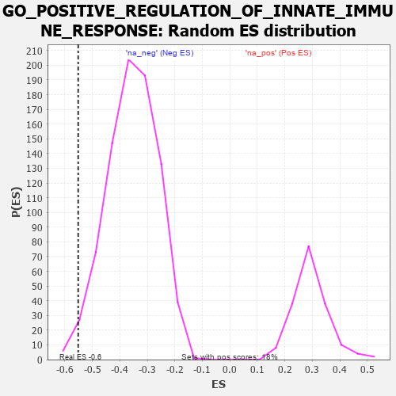

| | | Dataset | 7d |
| Phenotype | NoPhenotypeAvailable |
| Upregulated in class | na_neg |
| GeneSet | GO_POSITIVE_REGULATION_OF_INNATE_IMMUNE_RESPONSE |
| Enrichment Score (ES) | -0.55124384 |
| Normalized Enrichment Score (NES) | -1.5485992 |
| Nominal p-value | 0.015795868 |
| FDR q-value | 0.13860032 |
| FWER p-Value | 1.0 |
Table: GSEA Results Summary
 Fig 1: Enrichment plot: GO_POSITIVE_REGULATION_OF_INNATE_IMMUNE_RESPONSE
Fig 1: Enrichment plot: GO_POSITIVE_REGULATION_OF_INNATE_IMMUNE_RESPONSE
Profile of the Running ES Score & Positions of GeneSet Members on the Rank Ordered List
| PROBE | GENE SYMBOL | GENE_TITLE | RANK IN GENE LIST | RANK METRIC SCORE | RUNNING ES | CORE ENRICHMENT | | 1 | UBE2K | | | 94 | 1.739 | 0.0510 | No |
| 2 | XRCC6 | | | 694 | 0.560 | -0.0042 | No |
| 3 | HMGB2 | | | 892 | 0.507 | -0.0107 | No |
| 4 | MATR3 | | | 937 | 0.498 | 0.0017 | No |
| 5 | HMGB4 | | | 1008 | 0.482 | 0.0103 | No |
| 6 | SRC | | | 1128 | 0.459 | 0.0119 | No |
| 7 | PSMD7 | | | 1152 | 0.454 | 0.0254 | No |
| 8 | PSMD2 | | | 1181 | 0.450 | 0.0381 | No |
| 9 | PSMD4 | | | 1811 | 0.335 | -0.0290 | No |
| 10 | TRIM5 | | | 1852 | 0.327 | -0.0223 | No |
| 11 | PSMD6 | | | 1858 | 0.326 | -0.0111 | No |
| 12 | PAK3 | | | 1889 | 0.322 | -0.0033 | No |
| 13 | RAF1 | | | 2011 | 0.303 | -0.0075 | No |
| 14 | PSME4 | | | 2143 | 0.285 | -0.0138 | No |
| 15 | SYK | | | 2186 | 0.278 | -0.0090 | No |
| 16 | PSMF1 | | | 2251 | 0.268 | -0.0074 | No |
| 17 | SIN3A | | | 2361 | 0.251 | -0.0120 | No |
| 18 | PSMD5 | | | 2560 | 0.218 | -0.0291 | No |
| 19 | CUL1 | | | 2735 | 0.193 | -0.0441 | No |
| 20 | PSMD9 | | | 3179 | 0.125 | -0.0954 | No |
| 21 | AP1G1 | | | 3210 | 0.121 | -0.0948 | No |
| 22 | TAB1 | | | 3351 | 0.097 | -0.1090 | No |
| 23 | MED1 | | | 3405 | 0.089 | -0.1124 | No |
| 24 | PQBP1 | | | 3526 | 0.072 | -0.1250 | No |
| 25 | SKP1 | | | 3663 | 0.049 | -0.1403 | No |
| 26 | DHX9 | | | 3693 | 0.044 | -0.1424 | No |
| 27 | PSME3 | | | 4280 | -0.056 | -0.2143 | No |
| 28 | EP300 | | | 4941 | -0.186 | -0.2908 | No |
| 29 | XRCC5 | | | 4946 | -0.187 | -0.2845 | No |
| 30 | PRKDC | | | 4955 | -0.189 | -0.2787 | No |
| 31 | PDPK1 | | | 5043 | -0.207 | -0.2822 | No |
| 32 | PSMD1 | | | 5674 | -0.367 | -0.3483 | No |
| 33 | LAMP1 | | | 5796 | -0.404 | -0.3490 | No |
| 34 | MALT1 | | | 6432 | -0.634 | -0.4061 | No |
| 35 | PAK1 | | | 6691 | -0.757 | -0.4113 | No |
| 36 | MUC2 | | | 7802 | -2.066 | -0.4765 | Yes |
| 37 | TRAF6 | | | 7818 | -2.157 | -0.4004 | Yes |
| 38 | FYN | | | 7881 | -2.622 | -0.3134 | Yes |
| 39 | MUC19 | | | 7900 | -2.797 | -0.2145 | Yes |
| 40 | PSMD3 | | | 7907 | -2.887 | -0.1109 | Yes |
| 41 | PSMD8 | | | 7931 | -3.286 | 0.0050 | Yes |
Table: GSEA details [plain text format]

Fig 2: GO_POSITIVE_REGULATION_OF_INNATE_IMMUNE_RESPONSE: Random ES distribution
Gene set null distribution of ES for GO_POSITIVE_REGULATION_OF_INNATE_IMMUNE_RESPONSE